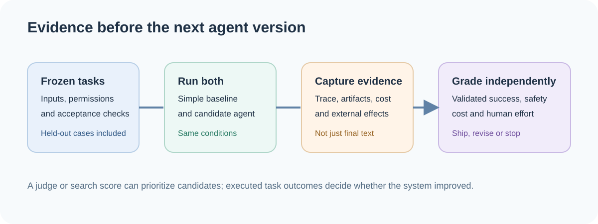

Freeze the question before comparing answers
An agent can produce an impressive trace while failing the task. Start with a strong direct baseline, a versioned set of representative tasks, fixed permissions and an explicit success rule. Include held-out cases so repeated prompt or harness changes do not overfit the examples used during development. Anthropic's agent-evaluation guide emphasizes task, environment and grader design.
Record the outcome alongside the trace: files changed, tests run, tool receipts, latency, model calls, human interventions and recoveries. A final answer is one observation, not the whole result. The useful cost metric is total operating cost divided by independently validated successes; report human review time separately rather than hiding it inside a score.


Run one comparison that can change a decision
For a hypothetical repository assistant, freeze 20 issue-to-patch tasks with acceptance tests and permission limits. Run a direct prompting baseline and the proposed agent on the same tasks. For each attempt, store the patch, test log, external actions, elapsed time and reviewer minutes. Independently grade whether the patch solves the issue without unauthorized effects. A fluent explanation alone does not pass.
Separate local smoke tests from release evidence. A change can pass unit tests and still fail because the browser state is wrong, an external API returned an uncertain receipt, or a human had to repair every result. Add adversarial inputs, timeouts, stale data and revoked permissions to the suite. Use fault injection where a production effect depends on recovery behavior.
Keep the improvement loop inspectable
SIFT uses pairwise LLM judgments and ranking to prioritize revised agent harnesses. Those judgments are a search aid. Executed benchmark tasks still determine whether a candidate improved. This distinction generalizes: a judge, reward model or search score may guide development, but final acceptance needs independent task evidence.
In operation, retain enough run state to explain what happened and recover safely: versioned prompts and tools, task IDs, checkpoints, pending approvals, receipts and an audit trail. Keep a separate lifecycle for improving the agent itself—plan, build, evaluate, deploy—from the lifecycle of executing one user's task.
Read the original work
These sources support the specific concepts above. Their task settings and publication status matter when applying a result.
- Demystifying evals for AI agentsRead for task design, environmental state and grading choices.
- Self Improvement via Fast Tree-searchRead for ranking agent designs while retaining executed tasks as outcome evidence.
- AI Verify Testing FrameworkRead for structured testing and reporting; verify that each test applies to the agent's actual effects.